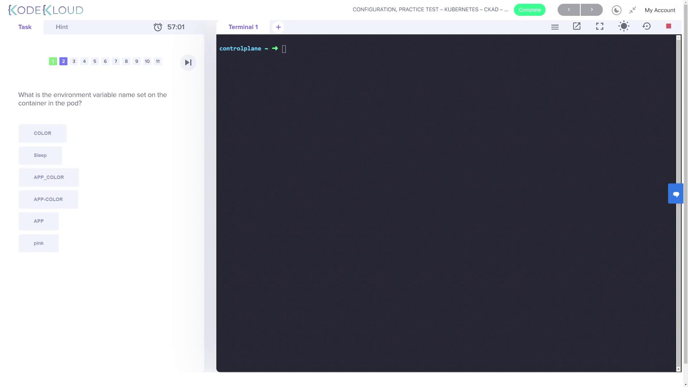

Chapter 3: Configuration
يا هلا بيك يا رائد الفضاء! في الشابتر ده هناخد رحلة عميقة جداً في إزاي نكونفيجر التطبيقات بتاعتنا، نتعامل مع الـ Docker Commands بالتفصيل، ونحترف استخدام الـ Secrets والـ ConfigMaps وكمان الـ Resources والتيتانيوم بتاع الـ Scheduling.
1. Docker Security & Images
عشان نفهم الـ Security في الـ Kubernetes كويس، لازم الأول نأسس نفسنا صح في الـ Docker Security. الموضوع كله بيدور حوالين إزاي نعزل الـ Processes.
Process Isolation
تخيل عندك سيرفر (Host) عليه شوية Services والـ Docker Daemon. لما بتعمل Run لكونتينر، زي مثلاً:
docker run ubuntu sleep 3600الكونتينر ده في الحقيقة هو مجرد Process عادي على الـ Host، بس معزول باستخدام حاجة اسمها Namespaces. جوه الكونتينر، الـ Process ده شايف نفسه واخد PID رقم 1
(يعني هو الكبير بتاع الكونتينر). لكن لو بصيت من بره الكونتينر (على الـ Host) وعملت
ps aux، هتلاقيه واخد PID مختلف وعادي جداً.
User Context
باي ديفولت، الكونتينر بيشتغل بصلاحيات الـ root. وده طبعاً مش أحسن حاجة في الـ Security. ممكن نغير اليوزر ده وإحنا بنشغل الكونتينر:
docker run --user=1000 ubuntu sleep 3600أو نحدده بشكل دائم في الـ Dockerfile:
FROM ubuntu
USER 1000Linux Capabilities
حتى لو أنت Root جوه الكونتينر، الـ Docker مش بيديك كل الصلاحيات المطلقة. بيستخدم ميزة في الكيرنل اسمها Linux Capabilities عشان يقلل صلاحيات الـ Root جوه الكونتينر. يعني مثلاً، الـ Root جوه الكونتينر مايقدرش يعمل Reboot للـ Host.

--privileged، أنت كدة بتدي الكونتينر كل صلاحيات الـ Root بتاعة الـ Host. ده خطر
جداً إلا لو أنت عارف بتعمل إيه!
تعالوا نعمل Docker Image لتطبيق Python Flask بسيط. الخطوات الأساسية لأي تطبيق:
- نختار Base OS (مثلاً Ubuntu).
- نعمل Update للـ Packages.
- ننزل الـ Dependencies (Python, Flask).
- ننسخ كود التطبيق جوه الكونتينر.
- نحدد الأمر اللي هيشغل التطبيق.

كل خطوة من دول بتترجم لسطر في الـ Dockerfile:
FROM ubuntu
RUN apt-get update && apt-get -y install python python-setuptools python-dev
RUN pip install flask flask-mysql
COPY . /opt/source-code
ENTRYPOINT FLASK_APP=/opt/source-code/app.py flask run --host=0.0.0.0لما بتعمل docker build، كل سطر بيعمل Layer. لو عدلت سطر واحد، Docker شاطر كفاية إنه
يعيد بناء الـ Layer دي بس والي بعدها، ويستخدم الـ Cache للي قبلها.

2. Commands & Arguments
دي من أكتر النقط اللي بتلخبط. إيه الفرق بين CMD و ENTRYPOINT؟
CMD (Command)
ده الأمر الافتراضي اللي بيشتغل لو المستخدم مكتبش أمر وهو بيشغل الكونتينر.
FROM ubuntu
CMD ["sleep", "5"]لو شغلت docker run ubuntu-sleeper، هينفذ sleep 5. لكن لو كتبت
docker run ubuntu-sleeper sleep 10، الأمر الجديد هيمسح الـ CMD القديم وهينفذ
sleep 10.
ENTRYPOINT
ده الأمر الأساسي اللي لازم يشتغل. أي حاجة بتكتبها في الـ docker run
بتتحط بعده كـ Arguments.
FROM ubuntu
ENTRYPOINT ["sleep"]
CMD ["5"]هنا لو عملت docker run ubuntu-sleeper 10، الـ 10 هتيجي مكان الـ 5، والنتيجة هتكون
sleep 10.
في Kubernetes، المصطلحات بتختلف شوية عن Docker:
| Docker Concept | Kubernetes Field |
|---|---|
ENTRYPOINT |
command |
CMD |
args |
مثال عملي في ملف YAML:
apiVersion: v1
kind: Pod
metadata:
name: ubuntu-sleeper-pod
spec:
containers:
- name: ubuntu-sleeper
image: ubuntu-sleeper
command: ["sleep2.0"]
args: ["10"]ده هيترجم للأمر: sleep2.0 10 جوه الكونتينر.
في اللاب ده، اتعلمنا إزاي نعدل الـ Arguments لـ Pod شغال.
المشكلة: الـ Pod بيشغل sleep 1200 وإحنا عايزينه ينام 2000 ثانية.
الحل: بما إننا ماينفعش نعدل الـ Command لـ Pod شغال، لازم نعمله Replace.
kubectl get pod webapp-green -o yaml > webapp-green.yaml
vi webapp-green.yaml
# (Edit the args to ["--color=green"])
kubectl replace --force -f webapp-green.yaml
3. Security Contexts & Accounts
ممكن نتحكم في مين اليوزر اللي بيشغل الكونتينر، وإيه الصلاحيات (Capabilities) اللي معاه.
apiVersion: v1
kind: Pod
metadata:
name: web-pod
spec:
securityContext:
runAsUser: 1000 # (1) Pod Level
containers:
- name: ubuntu
image: ubuntu
securityContext:
runAsUser: 1001 # (2) Container Level
capabilities:
add: ["MAC_ADMIN"]التحدي: تشغيل Pod بصلاحيات Root وإضافة Capability معينة (SYS_TIME) عشان يقدر يغير وقت النظام.
securityContext:
capabilities:
add: ['SYS_TIME']لو حطينا الـ User ID بـ 1000، مش هيقدر يعمل عمليات بتحتاج Root حتى لو معاه Capabilities، لازم نتأكد من التوافق.
الـ Kubernetes بيميز بين نوعين من الاكونتات:
- User Accounts: للبشر (Admins, Developers).
- Service Accounts: للآلات (Pods, Bots).
لما بتعمل Pod، أوتوماتيك بيتعمل Mount للـ default Service Account وتوكن عشان يقدر
يكلم الـ API Server.

Creating a Service Account
kubectl create serviceaccount dashboard-saوبعدين تربطه بالـ Pod:
spec:
serviceAccountName: dashboard-sa
TokenRequest API للحصول على Token مؤقت (وده الأكثر أماناً).

في اللاب، شوفنا الـ Dashboard بيحاول يكلم الـ API وفشل. السبب إنه كان بيستخدم الـ
default SA اللي صلاحياته محدودة.
الحل:
- عملنا SA جديد اسمه
dashboard-sa. - عملنا Update للـ Deployment عشان يستخدم الـ SA الجديد.

4. ConfigMaps & Secrets
أبسط طريقة عشان نخلي التطبيق Configurable هي الـ Env Vars.
env:
- name: APP_COLOR
value: pinkلكن لو عندك Pods كتير، الأفضل تستخدم ConfigMaps.
الـ ConfigMap بتجمع كل إعداداتك في مكان واحد.
kubectl create configmap app-config --from-literal=APP_COLOR=blueوبعدين تحقنها في الـ Pod:
envFrom:
- configMapRef:
name: app-configغيرنا لون التطبيق من Pink لـ Green عن طريق تعديل الـ Env Var، وبعدين عملنا Upgrade عشان نقرأ اللون من ConfigMap مركزية.


نفس فكرة الـ ConfigMaps، بس للبيانات الحساسة. الفرق الوحيد إنها بتكون Base64 Encoded.
kubectl create secret generic app-secret --from-literal=DB_Password=123456
التطبيق مكانش عارف يوصل للداتابيز عشان مفيش Credentials. عملنا Secret وحطينا فيه الـ User والـ Password، وربطناه بالـ Pod.


باي ديفولت، الـ ETCD بيخزن الـ Secrets كـ Plaintext. عشان نأمنها، بنعمل
EncryptionConfiguration.

وبعدين نعدل الـ kube-apiserver.yaml عشان يشاور على ملف التشفير ده:
- --encryption-provider-config=/etc/kubernetes/enc/enc.yaml
5. Resources & Scheduling
الـ Scheduler بيقرر يحط الـ Pod فين بناءً على الموارد اللي بيطلبها.
- Requests: الحد الأدنى المضمون (زي حجز الكرسي).
- Limits: الحد الأقصى المسموح (عشان ماياكلش اكل زمايله).

لو الكونتينر حاول يعدي الـ CPU Limit، بيحصله Throttling (بيبطأ).
لو حاول يعدي الـ Memory Limit، بيحصله Termination (OOMKilled).


ده نظام "المبيد الحشري". بترش مبيد (Taint) على النود عشان تمنع أي Pod ييجي عليه، إلا لو الـ Pod عنده مناعة (Toleration).

kubectl taint nodes node1 app=blue:NoScheduleأنواع الـ Effects:
- NoSchedule: ماحدش جديد ينزل.
- PreferNoSchedule: حاول ماتنزلش، بس لو مضطر ماشي.
- NoExecute: الجديد ماينزلش، والقديم اللي معندوش مناعة يطرد فوراً.

عملنا Taint على Node01. لما حاولنا نعمل Pod "Mosquito" من غير Toleration، فضل Pending. لما عملنا Pod "Bee" وحطينا فيه Toleration، اشتغل عادي.

الـ Taints بتمنع، لكن الـ Affinity بتجذب. لو عايز Pod معين يروح لنود معين (مثلاً نود عليه GPU)،
بتستخدم nodeSelector (بسيط) أو nodeAffinity (متقدم).

الـ Affinity بتديك قدرات زي In, NotIn, Exists.


لون نود node01 بالأزرق، وعملنا Deployment "Blue" وقولناله لازم تروح للنود اللي لونه أزرق.

عشان تعمل حجز كامل وحقيقي (Dedicated Node):
- استخدم Taint على النود (عشان تمنع أي حد غريب).
- استخدم Affinity على الـ Pod (عشان تضمن إنه يروح للنود ده).